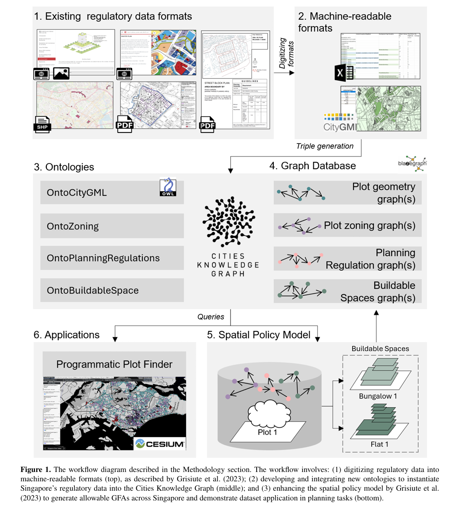

ABOUT THIS VIEWER
Information & methodology
Reasonable Design Lab
Similar Plot Retrieval is a research prototype made by the Reasonable Design Lab ↗.
How to read the viewer
Site 1 and Site 2 are the two reference sites. Every other highlighted boundary is a plot returned for comparison.
Similarity is evaluated progressively: first by plot characteristics, then by neighbouring non-road plots within 75 m, and finally by road frontage.
Research basis
This viewer builds on work by Ayda Grisiute, Martin Raubal and Pieter Herthogs. Their ontology-driven workflow turns planning regulations into structured knowledge-graph data and measurable estimates of allowable three-dimensional development space.
Grisiute, A., Raubal, M., & Herthogs, P. (2025). “3D Land Use Planning: Making Future Cities Measurable with Ontology-Driven Representations of Planning Regulations.” AGILE: GIScience Series, 6, 3.
About the GFA information
Allowable Gross Floor Area (GFA) values are estimates extracted from the cited academic dataset, which automated GFA determinations from URA planning regulations. Where different programmes produce different results, the viewer provides programme-specific GFA schemes.
GPR and storey controls provide additional density context when a single GFA value is not sufficient. These records support exploration rather than an official planning determination.
The lab is adapting this workflow to support the extrapolation component of its typology-development methodology.

MAPBOX SETUP
Add your public token
Paste your token into mapbox-token.txt, then double-click Launch Site.cmd again.